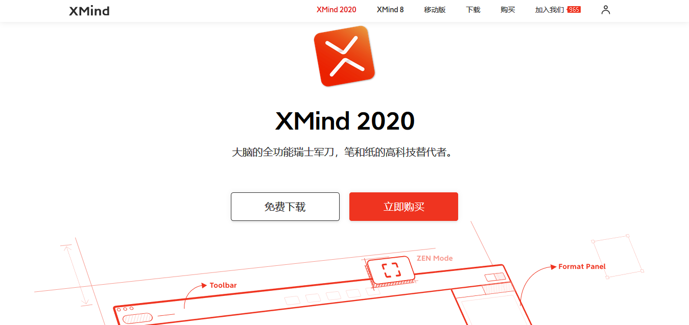

1.OneNote（office专业版里面的软件，可以做笔记，可以实时同步到手机上，可以插入的内容丰富）
2.word、Execel、PowerPoint (办公离不开的)
3.Axure（原型设计，流程图，UI，网页设计....）
4.XMind8 / XMind2020（思维导图）

5.Typora（markdown编辑器，各大网站写文章时用，平时可以做笔记）/ 飞书（回形针事务所做过详细的评测）
6.focusky（类似于PPT，但是动画炫酷，具有3D效果）
7.冰点下载（可以下载百度文库，道客巴巴..的文章，我测试过百度文库（在浏览器可以看到多少，就能下载多少））
8.TeamViewer（轻便的电脑屏幕分享，远程控制软件）
9.Snipaste（电脑截屏软件，自动识别窗口、图标大小，支持悬浮显示）
10.Everything（文件查找，快速查找整个电脑磁盘的文件，照片...）
11.哔哩哔哩直播姬（你可以直播的时候录屏，或者当作一个录屏软件来使用）
1.火绒安全（没有弹窗，自带弹窗拦截功能）/电脑安全管家（听说也不错）
2.geek（拆卸电脑软件，可以自动扫描注册表，文件残留等）
3.HelloFont（字体安装，可以自动查找字体是否可以商用）
4.格式工厂 （可以转换视频格式）
5.Carnac（实时显示键盘按键内容到屏幕上，录屏时很有用）
6.DiskGenius（磁盘分区工具，划分磁盘，安装系统可以使用）
7.bandizip（电脑解压，压缩软件，支持很多的压缩格式）
8.迅雷下载（一般般，但是有时还是有用的，弹窗太多）
1.PotPlayer（视频播放软件，支持各种播放格式）
2.TIM（腾讯公司的聊天，办公软件）
3.酷狗音乐（一直都在使用的，电脑软件主题美观）
4.百分浏览器（相当于在chrome浏览器外面包装一下，更加人性化，界面一贯的简洁）
5.Firefox（有自家的内核，插件丰富，人性化十足）